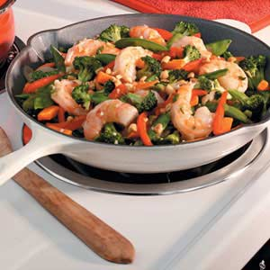

Scott Killeen's Shrimp Stir-Fry

Shrimp Stir-Fry
Prep Time: 5 min
Cook Time: 12 min
Ingredients
- 32 medium-large shrimps
- 500g of frozen vegatable mix
- 2 cloves of pressed garlic
- 2 tbsp of lemon juice
- 1 dried chill pepper
- 1/4 cup of canola oil
- 2 tbsp of soy sauce
- 1 tbsp of gingerroot
- 1 pinch of salt(optional)
Instructions
- Saute the Shrimp:
- Heat half of the canola oil in a pan over medium heat and gently cook the garlic and onion for 3 min, making sure they do not burn.
- Add the Shrimp, and cook until they turn opaque. (About 3 min.)
- Add the lemon juice and the chill pepper.
- Season with salt if desired.
- Saute the Vegetables:
- Heat the rest of the canola oil in a frying pan.
- Stir-fry the frozen vegatbles for 4-5 min.
- add the soy sauce and ginger.
- Combine:
- Transfer the cooked shrimp into the wok.
- Cook all together for 1-2 min over medium heat while stirring.
- Serve on warm plates.
Copyright © 2014 CISC 282.
All Rights Reserved.